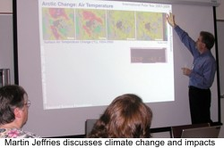
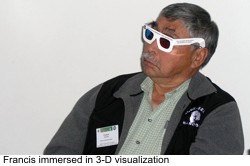
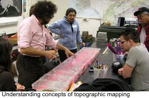
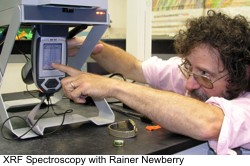
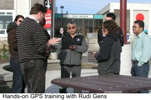
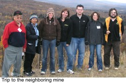

| |
|
|
Teachers Workshop
The Nome teachers and technical staff had already received a training on digital story telling and had worked with Jason Ohler in the past. The September 2008 workshop in Fairbanks was therefore completely devoted to the geoscience content knowledge and hands-on training activities.
Geoscience Content WorkshopThe geoscience workshop was conducted at the University of Alaska Fairbanks on September 26 and 27, 2008. Besides the AMIDST project personnel, it was attended by the Nome participant teachers, school technology staff, native elder, UAF scientists and subject experts on the topics of climate change, sea-lake ice, GPS and geospatial science, and gold in Nome . its origin, transportation, accumulation, exploration and mining.





|
| |
|